السلسلة 116
السيارة (صنف B) · 40 سؤال. كل سؤال فيه الصورة والصوت. اختار الجواب (ولا جوج إلا كانو صحاح)، ورك على «تأكيد» باش تشوف واش صبتي.
- 40سؤال
- 32باش تنجح
- 1 – 4جواب واحد ولا أكثر
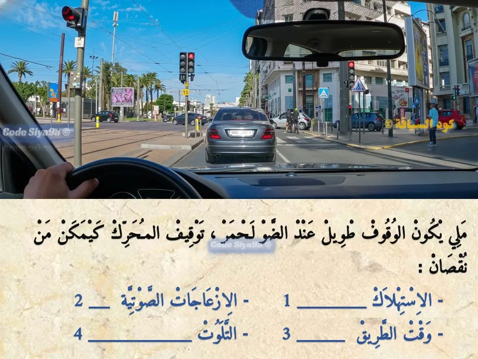
الكلافيي: 1–4 للجواب، Enter للتأكيد وللسؤال الجاي.
السلسلة 116 · النتيجة ديالك
0 / 40
السلسلة 116
السيارة (صنف B) · 40 سؤال، بالصوت، مع الجواب الصحيح والشرح.
السؤال 1
بيّن الجواب
الجواب الصحيح: 1 و 2 و 4
توقيف المحرك عند الوقوف في الضوء الاحمر غالبا كيكونوا عدد كبير ديال السيارات.
الا قمنا بتوقيف المحرك غادي تنقص الازعاجات الصوتية ، الاستهلاك ، و كمية الإنبعاث الناتج عن دوران المحرك الشي غادي يقلص من التولث .
- اما وقت الطريق فما عندوا حتى تاثير عليه .السؤال 2
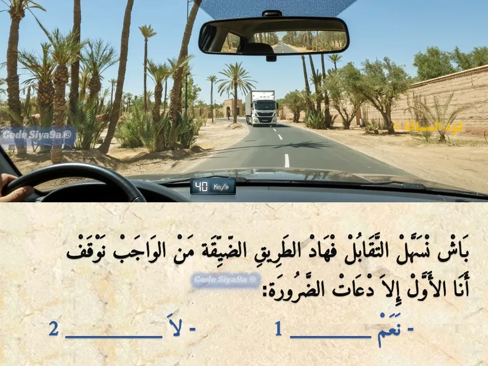
بيّن الجواب
الجواب الصحيح: 2
طريق ضيق: الطريق يبدو ضيقاً بوضوح، وقد لا يسمح بمرور مركبتين بسهولة، خاصة مع وجود شاحنة.
شاحنة قادمة: الشاحنة هي مركبة ثقيلة وأقل قدرة على المناورة من السيارة الخفيفة. في الطرق الضيقة، غالباً ما تجد الشاحنات صعوبة أكبر في المناورة أو التوقف المفاجئ.
أولوية المرور في الطرق الضيقة: بشكل عام، في الطرق الضيقة التي يصعب فيها التقابل، يجب على المركبة الأخف وزناً والأكثر قدرة على المناورة أن تفسح المجال. غالباً ما تكون القاعدة أن المركبة التي يمكنها المرور بسهولة أكبر أو التي هي في وضع أفضل لإفساح المجال هي التي يجب أن تفعل ذلك.
إذا كان هناك منحدر، غالباً ما يكون للمركبة الصاعدة الأولوية على المركبة النازلة.
إذا كان التقابل مستحيلاً، يجب على إحدى المركبتين التراجع أو التوقف للسماح بمرور الأخرى.السؤال 3
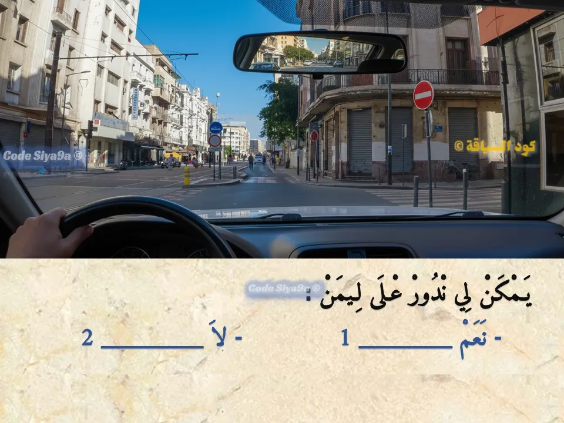
بيّن الجواب
الجواب الصحيح: 2
هذا العلامة لي ⛔ على ليمن هي علامة ديال المنع ، كتمنع تغيير الاتجاه ليمن . و بالتالي ما يمكنش لي ندور على ليمن
السؤال 4
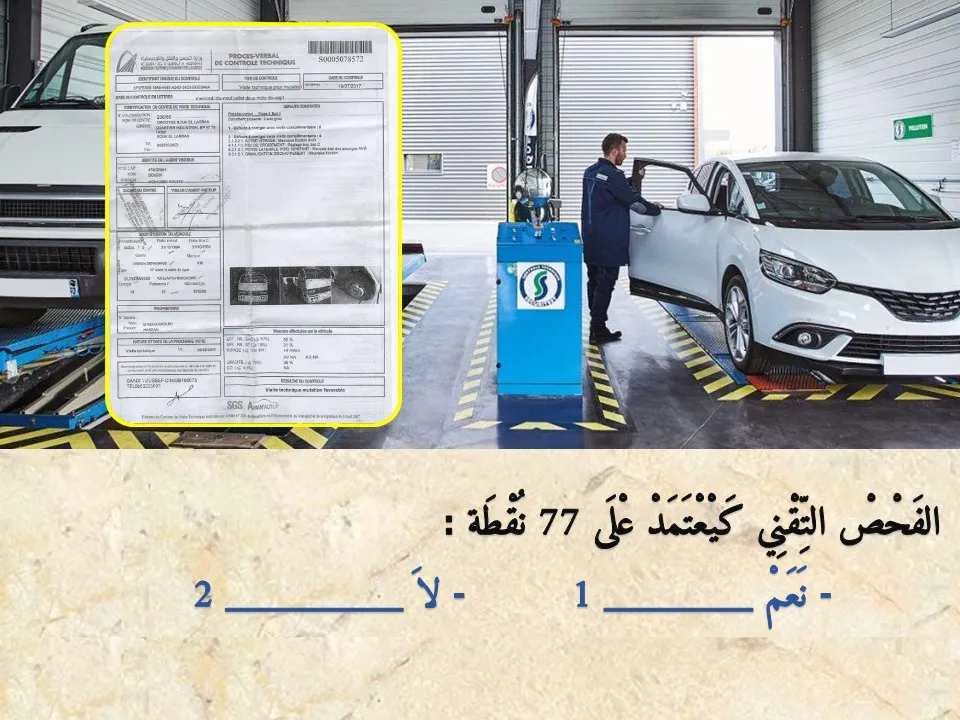
بيّن الجواب
الجواب الصحيح: 1
تهم المراقبة التقنية مراقبة عشر وظائف و77 نقطة تحقق، عند كل معاينة لعيب أو عدة عيوب، يتم منح مالك المركبة مدة شهر واحد لإجراء الإصلاحات اللازمة وإخضاع المركبة للمراقبة التقنية التكميلية.
وظائف المراقبة:
هوية المركبة
الحصر
التوجيه
الرؤية
الإضاءة والتشوير
الاتصال بالأرض
هيكل المركبة
المعدات
معدات الدفع والتحكم
التلوثالسؤال 5
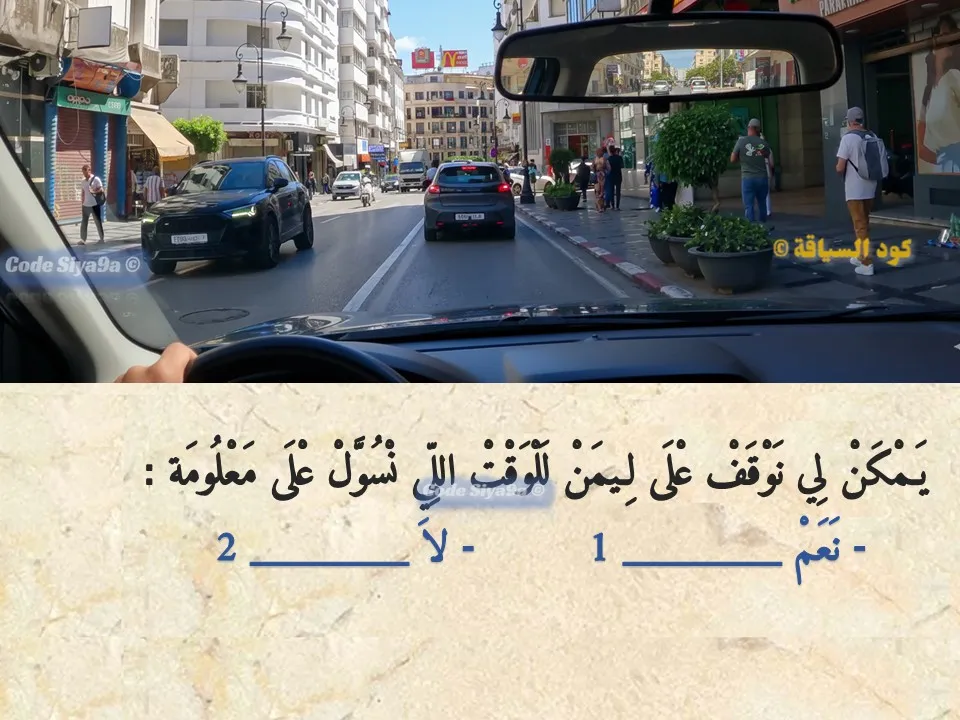
بيّن الجواب
الجواب الصحيح: 2
في الحالة السير في الاتجاهين . الخط ديال ليمن ديال المسلك ديالي متاصل ، هذا كيعني ممنوع الوقوف و التوقف .
السؤال 6
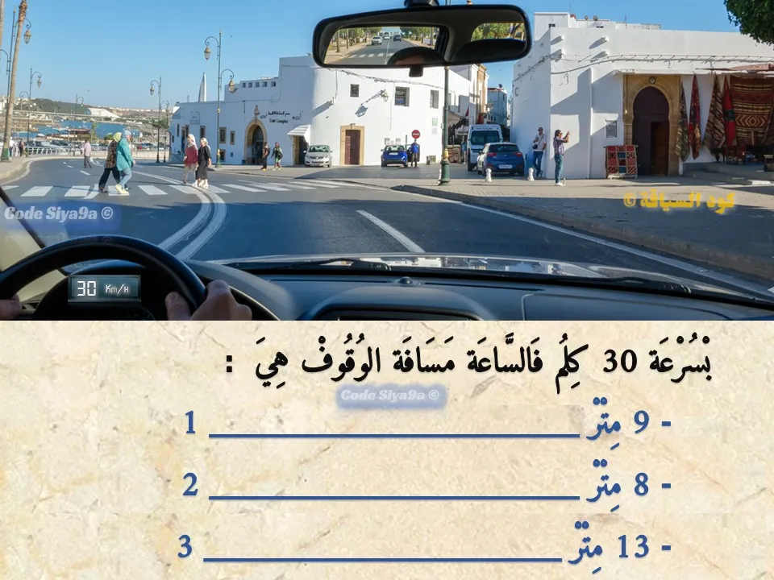
بيّن الجواب
الجواب الصحيح: 3
- مسافة الوقوف هي المسافة لي كتحتاج السيارة باش توقف ،
✅ مسافة الوقوف هي العدد العشري ديال السرعة ضرب في نفسه . الا كانت السرعه كبر او كتساوي 60 كلم في الساعه.
- في هذا الحالة السرعة قليلة 30 كلم في الساعه ، في هذا الحالة كيتم اضافت 4 متر .
يعني مسافة الوقوف غادي تساوي :
3*3 +4 = 13 مترالسؤال 7
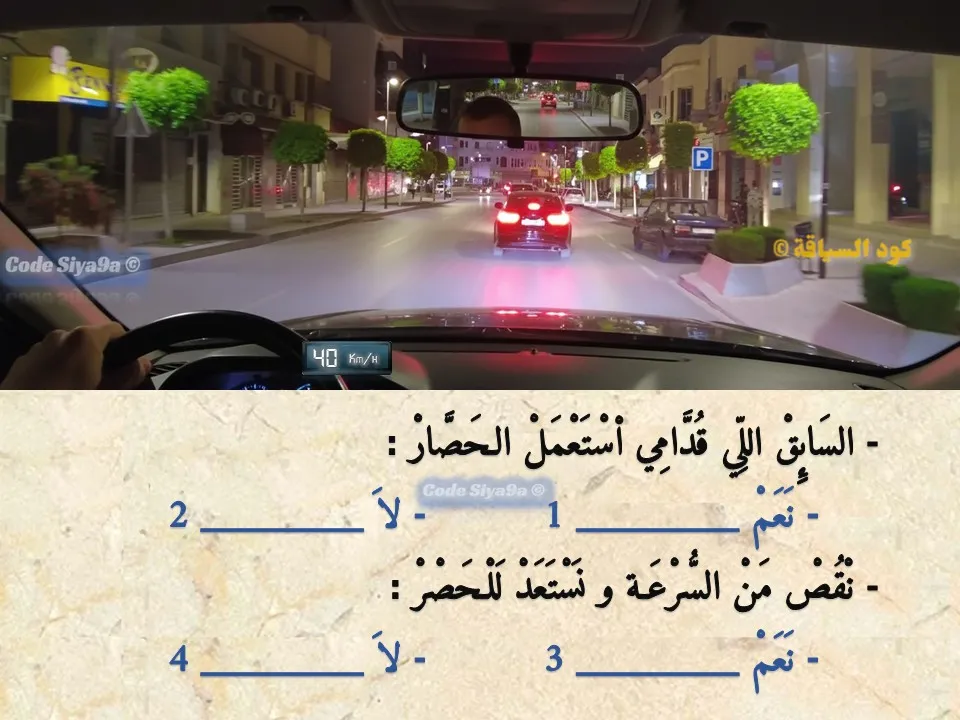
بيّن الجواب
الجواب الصحيح: 1 و 3
الضوء لي شعل خلف السيارة كيدل على ان السائق ضغط على الفرامل .
- واجب عليا نقص من السرعه و نستعد الحصر حتى انا باش نتجنب اي خطر ممكن .السؤال 8
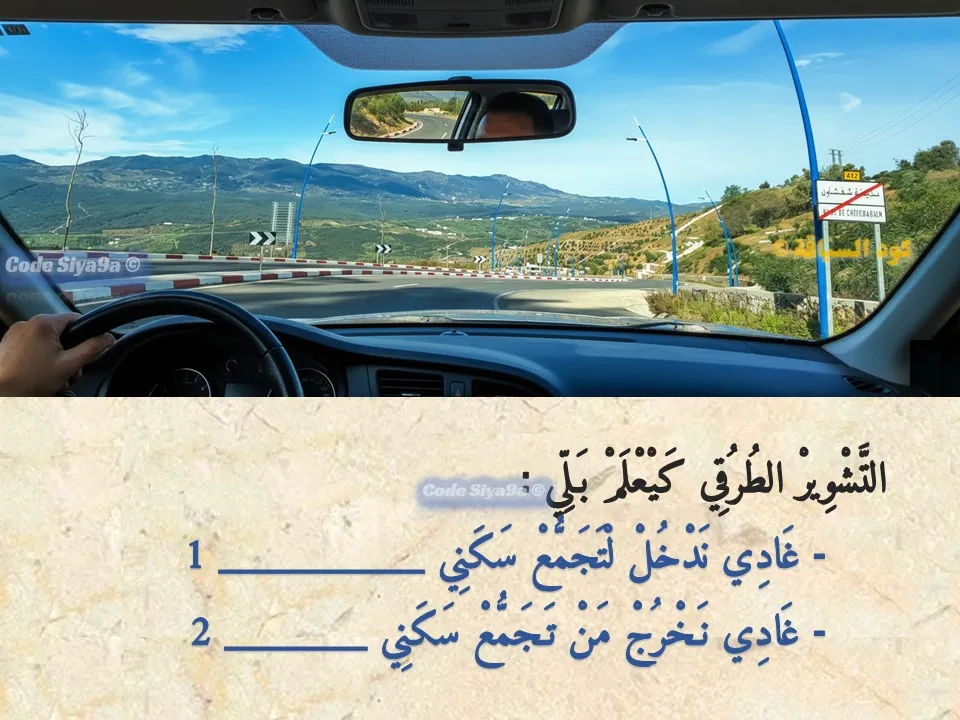
بيّن الجواب
الجواب الصحيح: 2
هذا اللوحة مكتوب فيها "مدينة شفشاون" و مضروب عليها بالاحمر .
كتعني انني غادي نخرج من تجمع سكني .السؤال 9
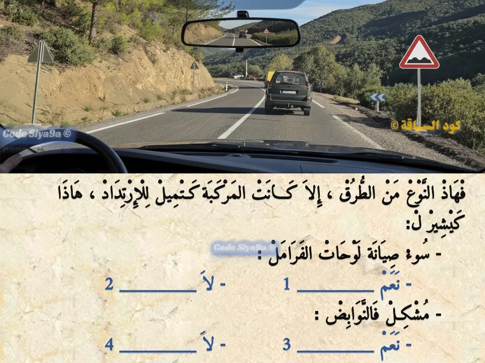
بيّن الجواب
الجواب الصحيح: 2 و 3
الارتداد ديال المركبة ممكن يكون السبب ديالوا مشكل في النوابض .
يمكن نشعر بهاذ الارتداد في المقود ..السؤال 10
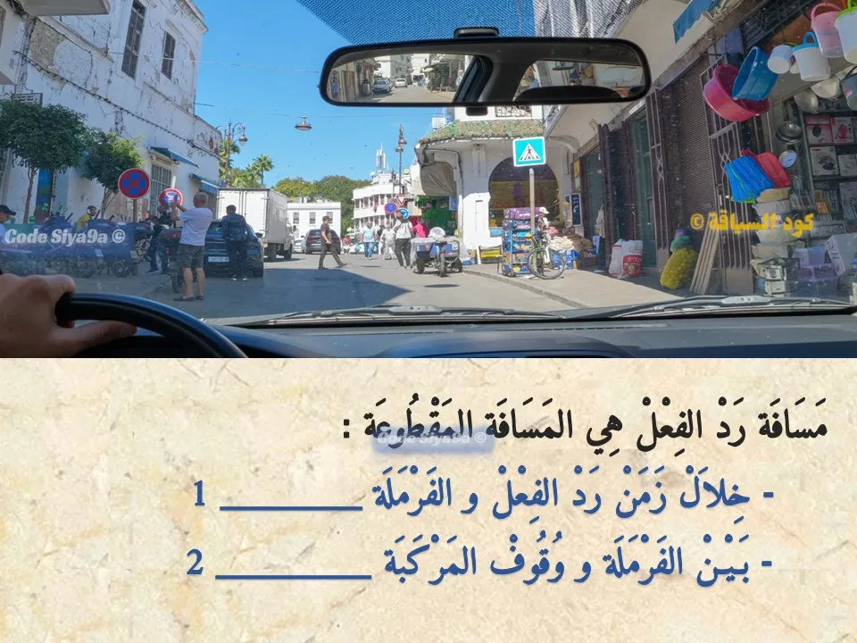
بيّن الجواب
الجواب الصحيح: 1
مسافة رد الفعل هي المسافة المقطوعة خلال زمن رد الفعل و الفرملة .
الوقت لي كيشوف فيه السائق العائق او الخطر و كيضغط على دواسة الفرامل .السؤال 11
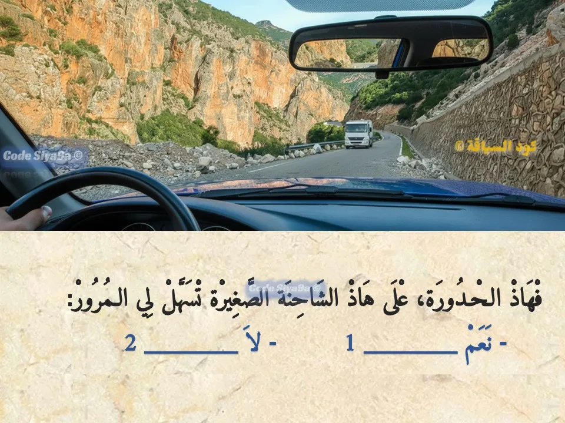
بيّن الجواب
الجواب الصحيح: 2
في الحدورة من الواجب على لي هابط هو لي يسهل المرور على لي طالع .
حيت الهبوط كيكون سهل ،على عكس الطلوع كيكون صعيب .
يعني انا لي واجب عليا نسهل المرور على هذا الشاحنة .السؤال 12
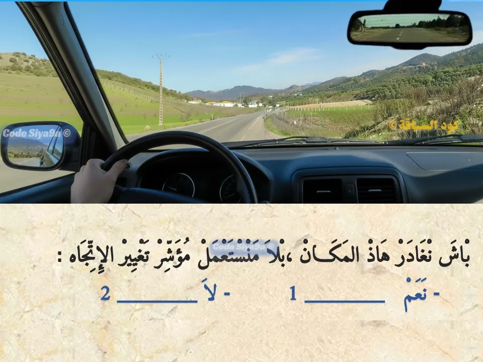
بيّن الجواب
الجواب الصحيح: 2
باش نغادر هذا المكان ضروري نستعمل مؤشر تغيير الاتجاه باش نعلم مستعملي الطريق الاخرين بلي غادي نندمج في حركة السير .
- بالفعل ممكن يكون شي سائق جاي بسرعة كبيرة و بالتالي الا ما شافش من بعيد مؤشر تغيير الاتجاه ما غاديش يرد البالالسؤال 13
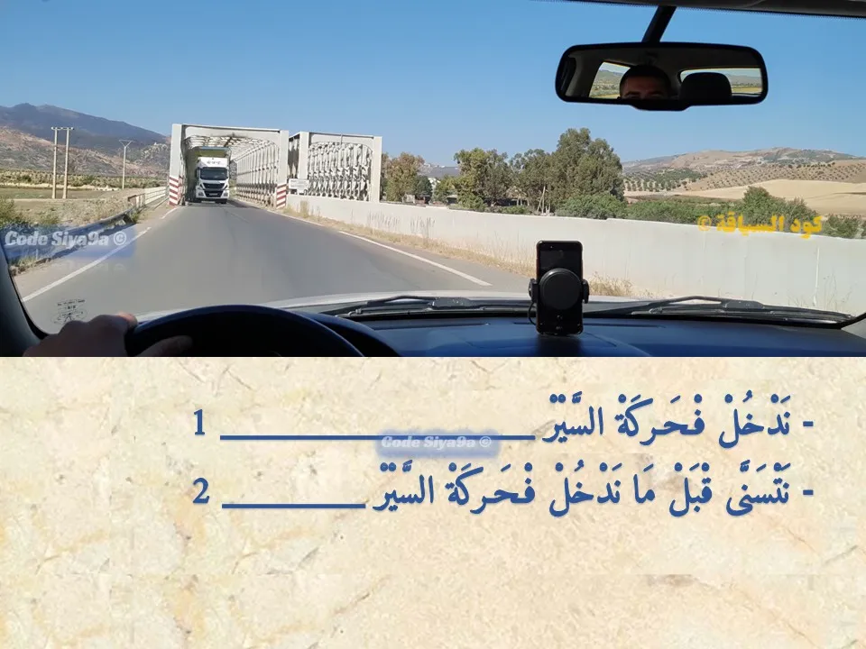
بيّن الجواب
الجواب الصحيح: 2
التقابل مع هذا الشاحنة فهاذ القنطرة ممكن يكون خطير ، و بالتالي واجب على لي مزال ما دخلش للقنطرة يسمح للي وسط القنطرة باش يخرج .
يعني نتسنى قبل ما ندخل فحركة السير .السؤال 14
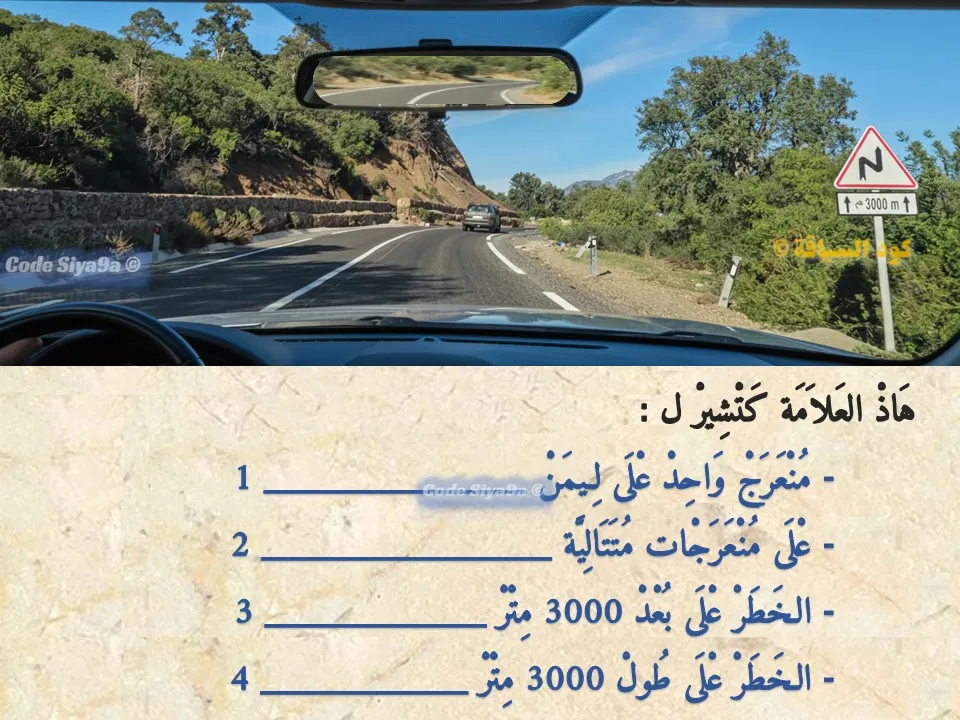
بيّن الجواب
الجواب الصحيح: 2 و 4
هذا العلامة ديال الخطر كتعلم على منعرجات متتالية . المنعرج الاول غادي يدور على ليمن .
- تحت من العلامة المثلثة عندي علامة تكميلية فيها 3000 م مع اسهم للأعلى .
- هذا الاسهم للأعلى كيعلموا على الامتداد يعني الخطر ديال المنعرجات المتتالية غادي يمتد على طول 3000 م . يعني 3 كلم كلها منعرجات .السؤال 15
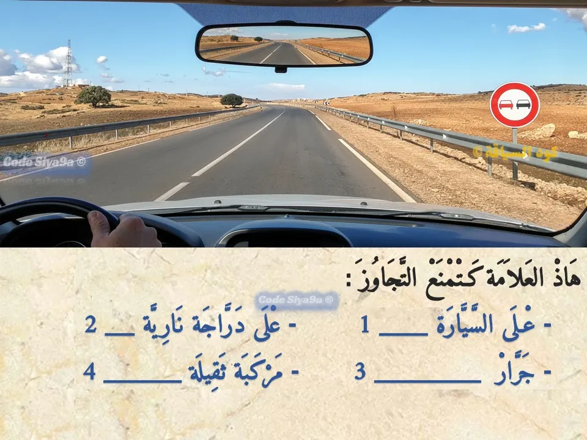
بيّن الجواب
الجواب الصحيح: 1 و 3 و 4
هذا العلامة ديال المنع , كاتمنع التجاوز على جميع انواع المركبات بمحرك .
- هذا العلامة ما كتعنيش الدرجات النارية او بمحرك او الهوائية .
- يعني ممنوع نتجاوز سيارة ، شاحنة ، حافلة ،جرار ، مركبة ثقيلة ، شاحنة .السؤال 16
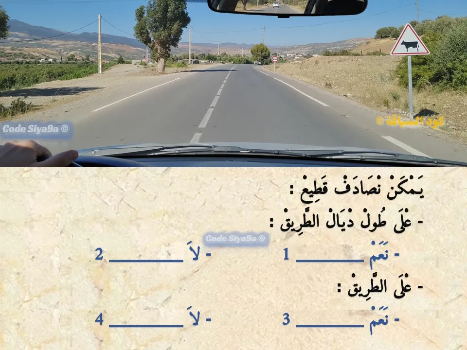
بيّن الجواب
الجواب الصحيح: 1 و 3
هذا العلامة ديال الخطر كتعلم على خطر وجود حيوانات أليفة على بعد 150 متر .
- هذا كيعني ممكن نصادف حيوانات أليفة في جنب الطريق او على الطريق .السؤال 17
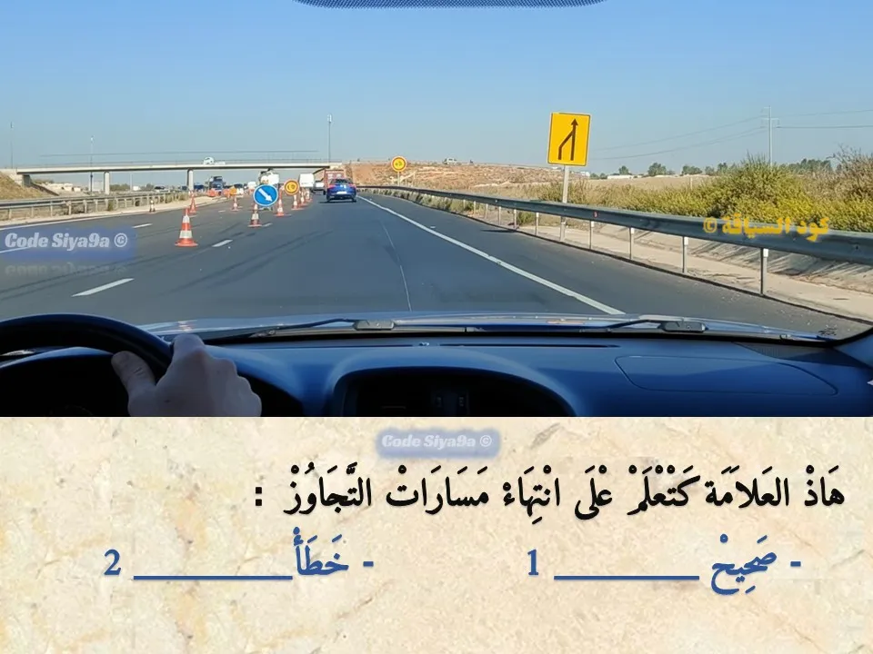
بيّن الجواب
الجواب الصحيح: 1
هذا العلامة كتعلم على نقصان في عدد المسالك .
- كانوا 2 ديال المسارات و ابتدأ من العلامة غادي يصبحوا فقط 1 .
-مسلك واحد للسير فقط و ما كاينش مسلك ديال التجاوز . يعني انتهاء مسارات التجاوز .
يعني الجواب الصحيح هو رقم 1السؤال 18
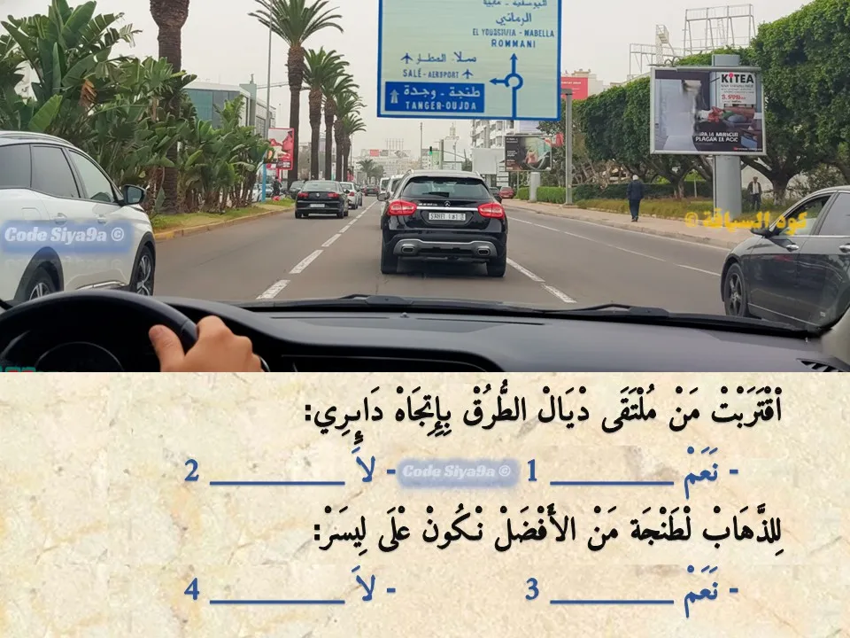
بيّن الجواب
الجواب الصحيح: 1 و 3
التشوير الطرقي كيعلم على انني قربت من ملتقى طرق دائري ، يعني مدار .
- باش نكمل السير للقدام يمكن لي نبقى في هذا المكان .
- الا كنت غادي ندور على ليسر ، نمشي لطنجة خاصني نغير للمسلك لي على لسير.السؤال 19
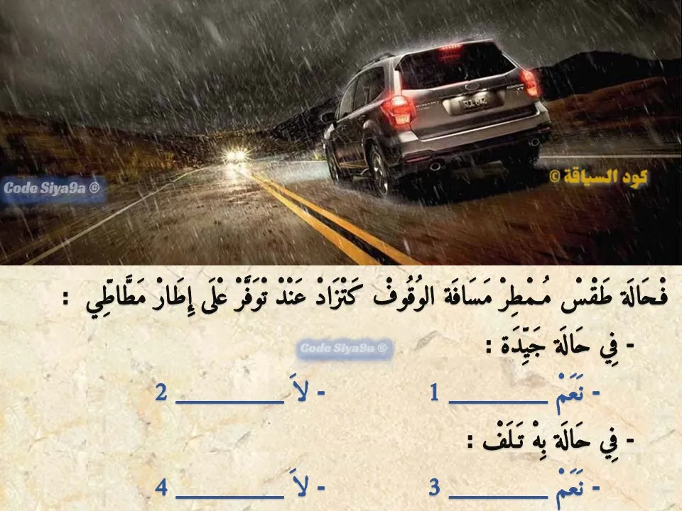
بيّن الجواب
الجواب الصحيح: 1 و 3
فوقت الشتاء مسافة الوقوف كتزاد في جميع الحالات.
- الا كانوا الإطارات المطاطية في حالة بها تلف غادي تكون مسافة الوقوف اطول من الا كانوا في حالة جيدة .
و لكن على العموم في جميع الحالات غادي تزاد مسافة الوقوف .السؤال 20
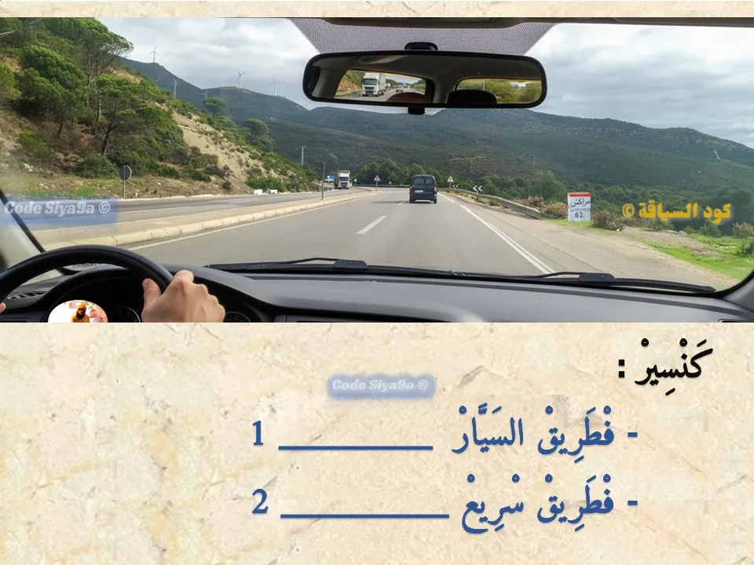
بيّن الجواب
الجواب الصحيح: 2
الطريق السريع هو طريق تم إنشاءه للنقل العام بين أماكن مهمة مثل المدن والبلدات والمعالم ويتم استخدام هذا المصطلح للإشارة إلى عدة أنواع من الطرق،
الطرق السريعة لها عدة تصاميم مختلفة، من الممكن أن تكون بعدة مسارات مع وجود جزيرة وسطية أو حاجز يفصل بين الاتجاهين المختلفين لحركة المرور، ونقط تحكم في الدخول (مدارج وجسور)، ويمكن أن تكون الطرق السريعة بسيطة مثل طريق ذو مسارين.السؤال 21
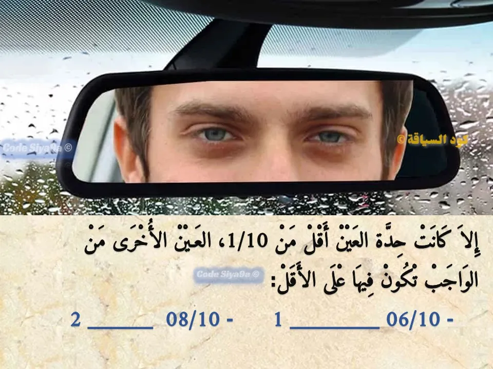
بيّن الجواب
الجواب الصحيح: 2
أدنى حد الرؤية المطلوب للحصول على رخصة السياقة صنف ب، أ ، أ1، ، و
نص القرار الوزاري المشترك الصادر في 1984/11/15، الذي يحدد قائمة الامراض التي تتعارض والحصول او الابقاء على رخصة السياقة، على ان:
ادنى حد للرؤية للاشخاص العاديين، هو ان لا تقل احدى العينين على 10/6، يعني المجموع الادنى المطلوب هو 20/12، اي 10/6 للعين اليمنى و10/6 للعين اليسرى، يمكنه طلب الحصول على رخصة ضمن الاصناف المذكورة، يعني اقل من هذه النسبة يكون التصحيح النظري بالنظارات او العدسات الطبية مع شهادة طبية تثبت ذلك ضروري.
الاعور هو كل شخص حدة بصر احدى العينين تقل او تساوي 10/2، فيجب ان لا تقل العين الاخرى عن 10/8.
الاعور يمنع من تعليم السياقة.
اما الاوزان الثقيلة ، ج ، د ،هـ يجب ان لا تقل حدة الرؤية لمجموع العينين عن 20/16، دائما، مثلا:
10/6 والعين الاخرى 10/10
أو 10/7 والعين الاخرى 10/9
او 10/8 والعين الاخرى 10/8السؤال 22
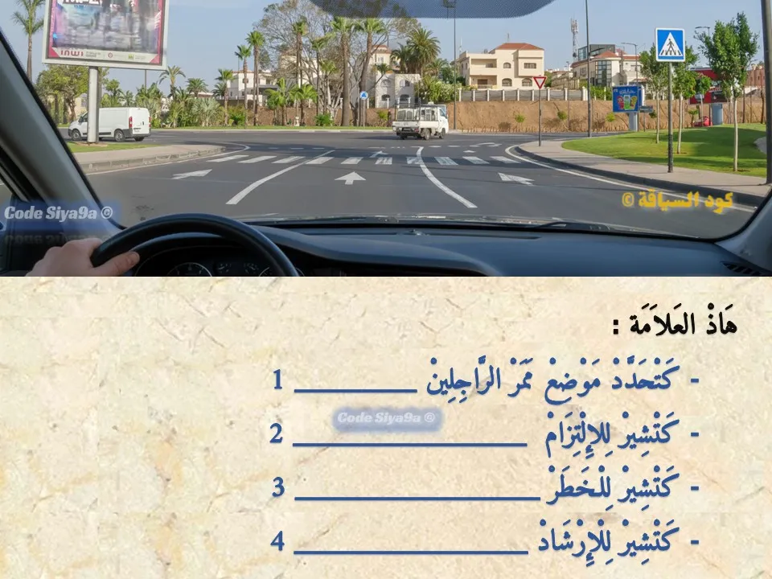
بيّن الجواب
الجواب الصحيح: 1 و 4
هذا العلامة ديال الارشاد كتحدد موضع ممر الراجلين.
يعني الجواب الصحيح هو 1 و 4السؤال 23
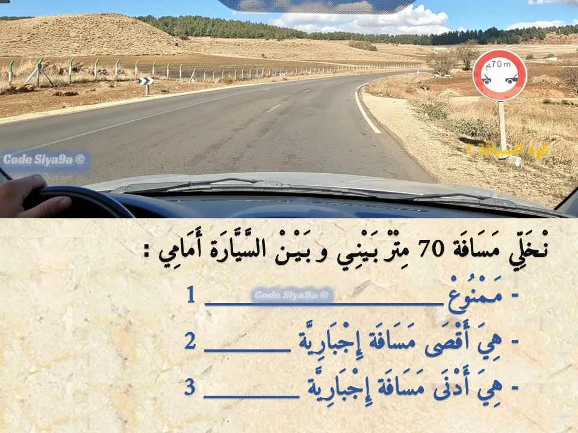
بيّن الجواب
الجواب الصحيح: 3
هذا العلامة ديال المنع كتعلم على ان السير ممنوع بمسافة اقل من 70 متر بين المركبات.
يعني الجواب الصحيح هو رقم 3السؤال 24
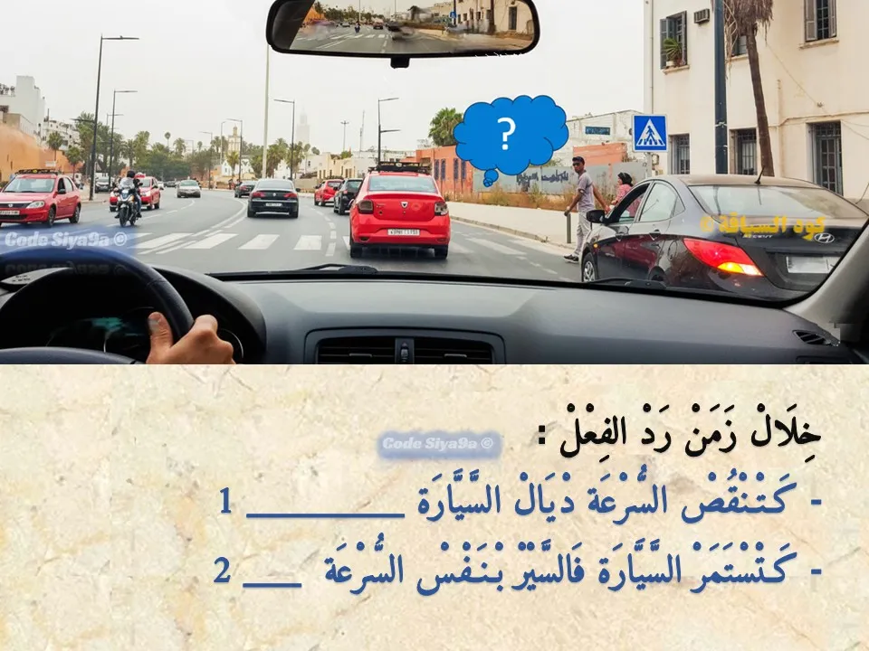
بيّن الجواب
الجواب الصحيح: 2
زمن رد الفعل هو منين كيكتشغ السائق الخطر حتى يضغط على الفرامل .
- خلال هذا المدة السيارة كتكون كتسير بنفس السرعةالسؤال 25
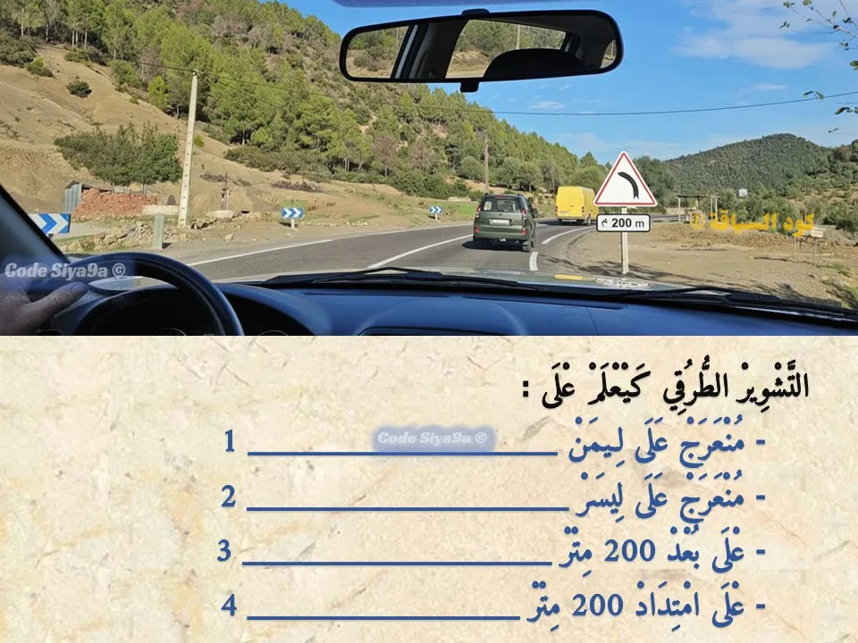
بيّن الجواب
الجواب الصحيح: 1 و 2 و 3
التشوير الطرقي كيعلم على منعرج على ليسر .
- تحت العلامة كاين علامة تكميلية فيها "200 م " يعني انا المنعرج كيتواجد على بعد 200 متر . عوض 150 متر .
هذا العلامة المتقدمة كيتم وضعها قبل من مكان تواجد الخطر ، باش تعطي للسائق فرصة باش يتاخد الإجراءات اللازمة مثل ينقص من السرعة ....السؤال 26
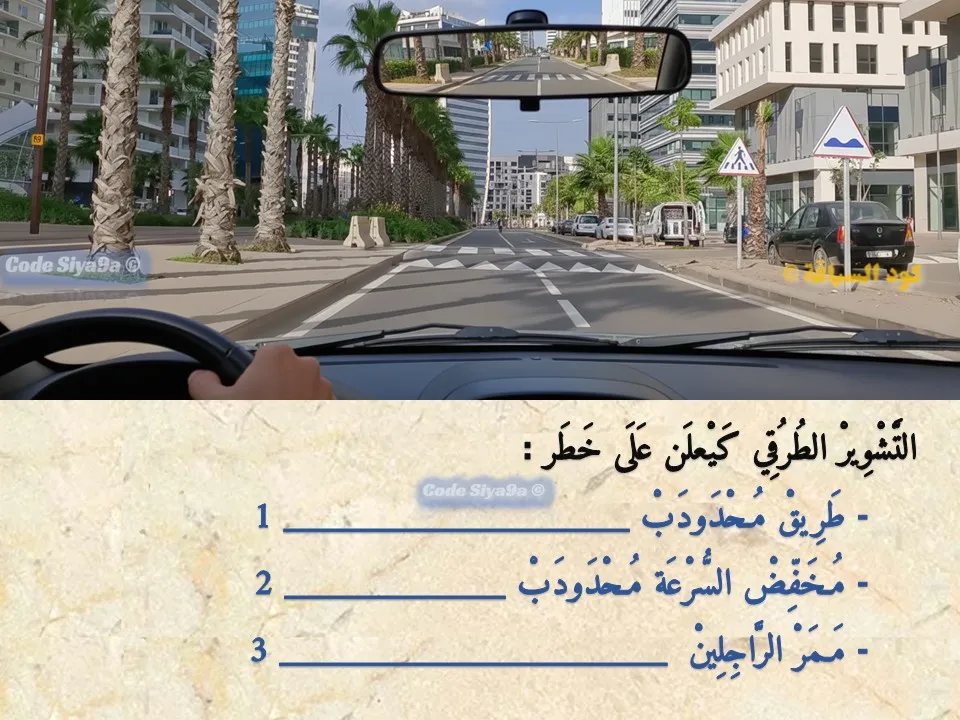
بيّن الجواب
الجواب الصحيح: 1 و 3
التشوير الطرقي كيعلم على:
- خطر ممر الراجلين.
- خطر وهدة و حدبة .
يعني الجواب الصحيح فقط هو رقم 3السؤال 27
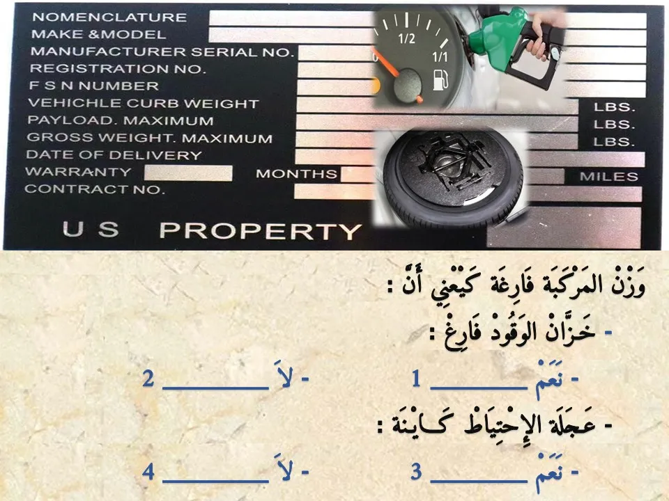
بيّن الجواب
الجواب الصحيح: 2 و 3
وزن المركبة فارغة (أو الوزن الفارغ أو كتلة السيارة فارغة) هو وزن المركبة في حالة التشغيل. وهذا يشمل عادةً السيارة مع خزان الوقود ممتلئاً بنسبة 90% (أو 100% حسب بعض المعايير)، وجميع السوائل (زيت المحرك، سائل التبريد، سائل الفرامل، إلخ)، والأدوات الضرورية، والعجلة الاحتياطية.
السؤال 28
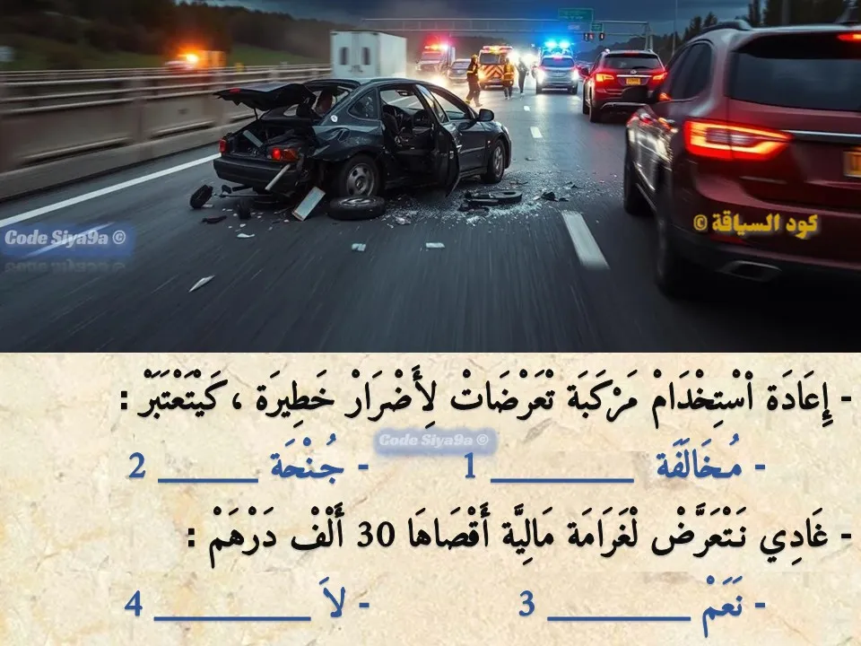
بيّن الجواب
الجواب الصحيح: 2 و 3
تعتبر إعادة استخدام مركبة تعرضت لأضرار خطيرة:
إعادة استخدام كل مركبة خاضعة للتسجيل أصيبت بأضرار خطيرة دون تقديم تقرير خبرة بشأنها ودون المصادقة عليها.
4
الاستمرار في استخدام مركبة، على الطريق العمومية، خاضعة للتسجيل غير قابلة للإصلاحتقنيا والمسحوبة شهادة تسجيلها .
و غرامة من خمسة آلاف (5.000) إلى
ثلاثين ألف (30.000 درهم بالنسبة
للمركبات التي يقل وزنها الإجمالي المأذون به محملة عن 3.500 كيلوغرام؛ من عشرة آلاف (10.000) إلى ستين ألف (60.000) درهم بالنسبة للمركبات التي يساوي أو يفوق وزنها الإجمالي المأذون به محملة 3.500 كيلوغرام.
علاوة على ذلك، تأمر المحكمة بمصادرة المركبة لفائدة الدولة.السؤال 29
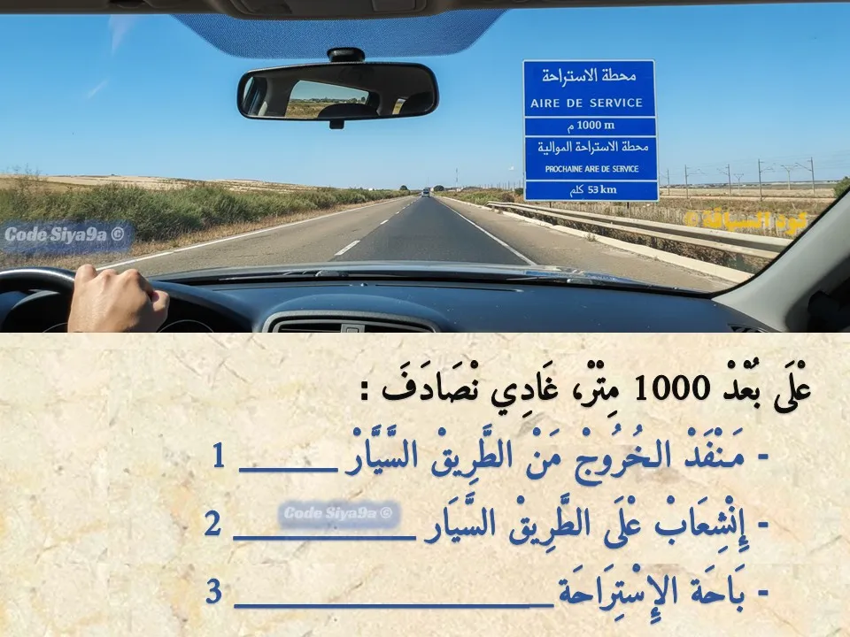
بيّن الجواب
الجواب الصحيح: 3
هذا العلامة ديال الارشاد، كتعلم عدة محطات ديال الاستراحة ، المحطة الأولى كتواجد على بعد 1000 متر . و الموالي على بعد 53 كلم .
- يعني الجواب الصحيح هو رقم 3 . غادي نلقى باحة الإستراحة على بعد 1000 متر .السؤال 30
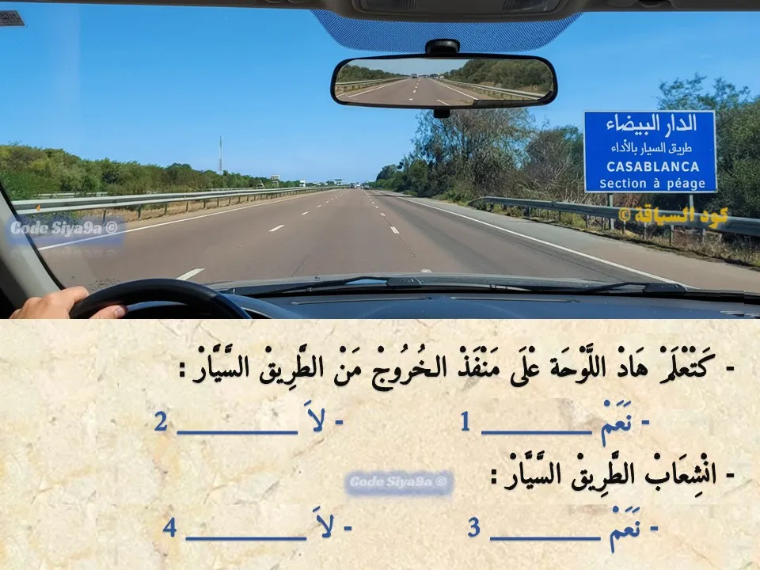
بيّن الجواب
الجواب الصحيح: 2 و 4
تُظهر الصورة طريقاً سياراً (أوتوستراد) ولافتة زرقاء تشير إلى "الدار البيضاء" باللغتين العربية واللاتينية، مع تبيان أن "طريق السيار بالأداء" و "Section à péage".
اللافتة المعروضة هي لوحة إرشادية للمسار الرئيسي للطريق السيار، وتوضح الوجهة (الدار البيضاء) وأن الطريق يضم قسماً بـ"الأداء" (رسوم). إنها ليست لوحة تشير إلى مخرج محدد من الطريق السيار بحد ذاته. لذا، الإجابة على هذا السؤال هي "لا".
انشعاب الطريق السيار:
الصورة تُظهر طريقاً سياراً مستقيماً، ولا يوجد انشعاب (تفرع) للطريق واضح أو مباشر في المشهد. اللافتة تقدم معلومات عن الطريق الرئيسي. لذا، الإجابة على هذا السؤال هي "لا".السؤال 31
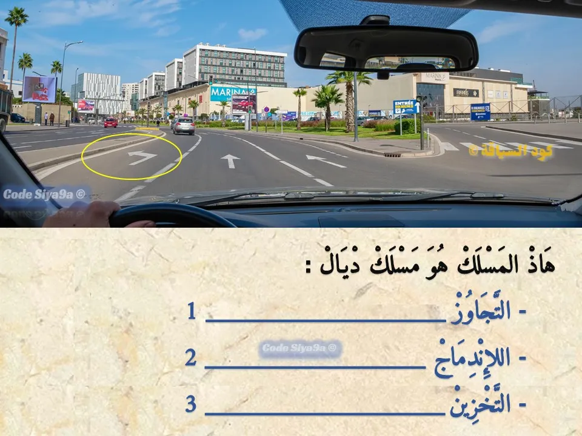
بيّن الجواب
الجواب الصحيح: 3
المسلك لي اقصى اليسار هو مسلك ديال التخزين كيمني باش ندور على ليسر .
في هذا المسلك ضروري نوقف قبل ما ندور على ليسر .السؤال 32
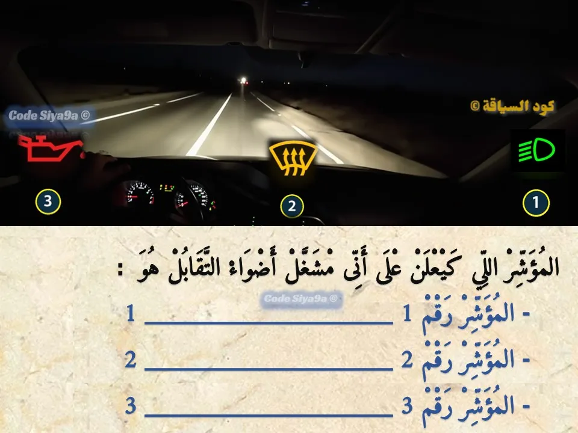
بيّن الجواب
الجواب الصحيح: 1
المؤشر رقم 1: كيدل على تشغيل اضواء التقابل.
المؤشر رقم 2: كيدل على تشغيل مزيل الضبابة من الزجاج ديال السيارة .
المؤشر رقم 3 : مؤشر متعلق بمستوى الزيت. وجود مشكلة في تزييت أجزاء محرك المركبة، أي عدم وجود ضغط زيت كاف أو أن مستوى الزيت منخفض جداً داخل المحركالسؤال 33
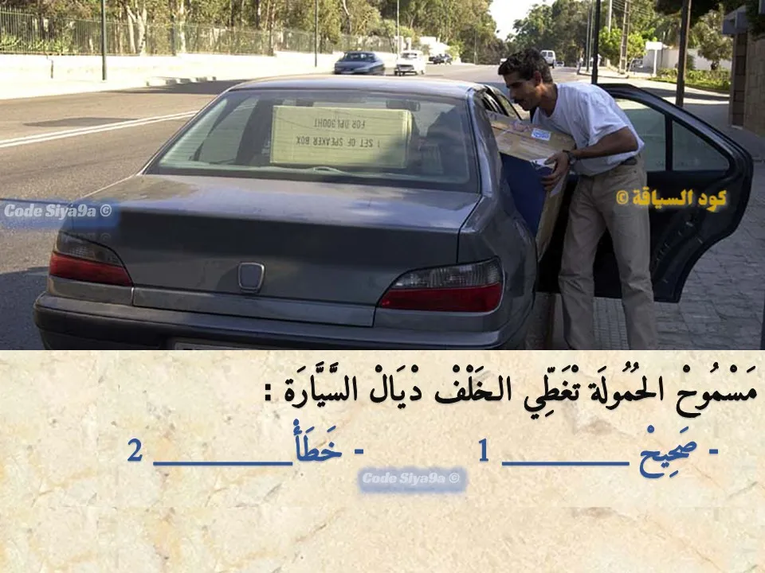
بيّن الجواب
الجواب الصحيح: 2
غير مسموح ان الحمولة تغطي الخلف ديال السيارة .
لكون الحمولة كتحجب الرؤية للخلف من خلال المرأة الداخلية للمرمبةالسؤال 34
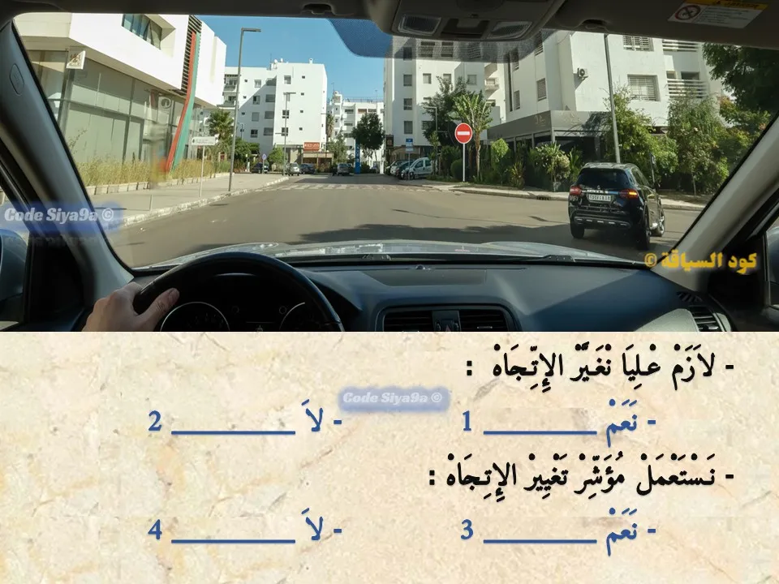
بيّن الجواب
الجواب الصحيح: 1 و 3
التشوير الطرقي كيعلم على ممنوع نكمل السير للأمام.
و بالتالي واجب عليا نغيير الاتجاه . و من الواجب عليا نستعمل مؤشر تغيير الاتجاه.السؤال 35
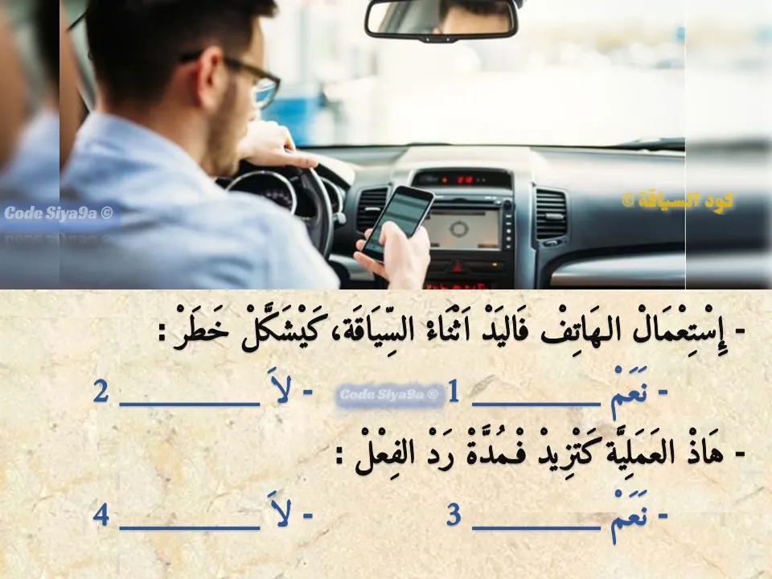
بيّن الجواب
الجواب الصحيح: 1 و 3
نعم، يُعتبر استخدام الهاتف باليد أثناء القيادة سلوكاً خطيراً جداً. فهو يشتت انتباه السائق عن الطريق، ويقلل من قدرته على التركيز على حركة المرور والإشارات، ويزيد بشكل كبير من خطر وقوع الحوادث.
استخدام الهاتف أثناء القيادة يؤثر سلباً على زمن رد فعل السائق. فإذا كان السائق منشغلاً بالهاتف، فإنه سيستغرق وقتاً أطول لإدراك أي خطر على الطريق والتفاعل معه (مثل الضغط على الفرامل أو تغيير المسار)، مما يزيد من مسافة التوقف ومن احتمالية الاصطدام.السؤال 36
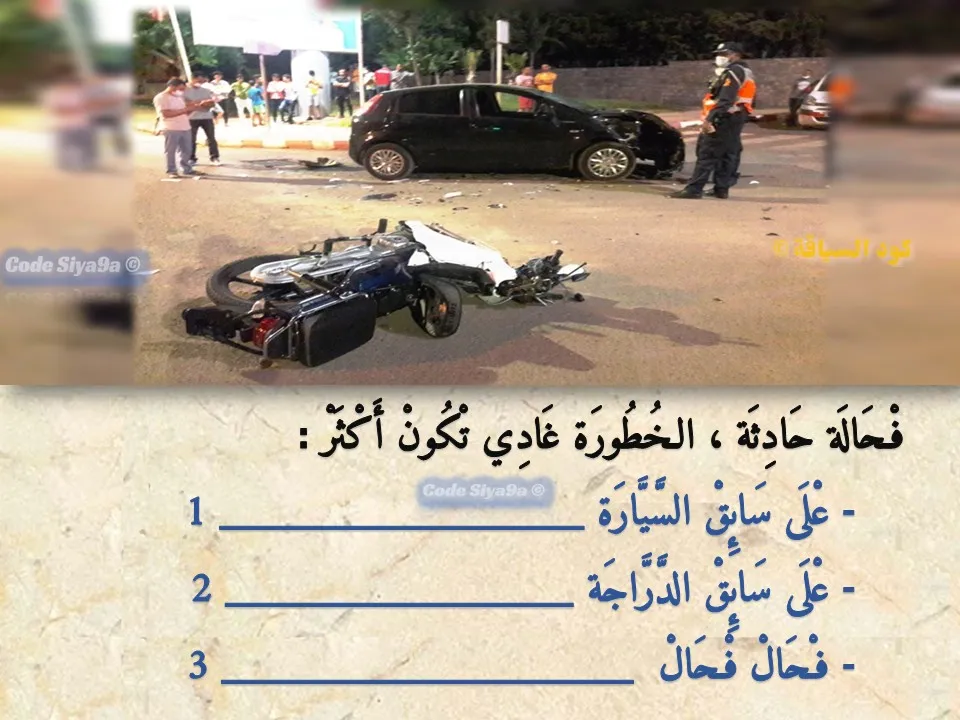
بيّن الجواب
الجواب الصحيح: 2
لتحليل الخطورة في حادث مروري بين سيارة ودراجة:
- سائق السيارة: يتمتع سائق السيارة بحماية نسبية داخل السيارة، حيث توفر السيارة هيكلاً معدنياً، أحزمة أمان، ووسائد هوائية (في معظم السيارات الحديثة) التي تمتص جزءاً كبيراً من قوة الاصطدام.
- سائق الدراجة: سائق الدراجة النارية يكون مكشوفاً بشكل كبير. جسمه هو الذي يمتص قوة الاصطدام مباشرة. بالرغم من ارتداء الخوذة والملابس الواقية، إلا أن هذه الحماية محدودة مقارنة بحماية السيارة. لذا، فإن الإصابات التي يتعرض لها سائق الدراجة في حادث مع سيارة تكون عادةً أخطر بكثير، وقد تكون قاتلة أو تسبب عاهات مستديمة.
--- في حالة حادث بين سيارة ودراجة، تكون الخطورة على سائق الدراجة أكثر بكثير.السؤال 37
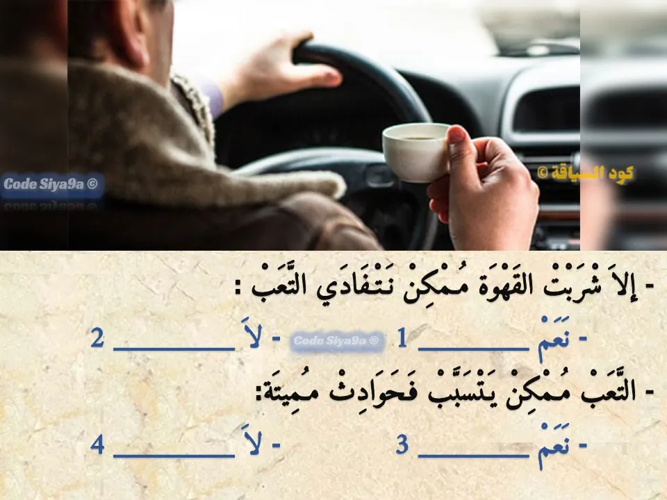
بيّن الجواب
الجواب الصحيح: 2 و 3
- القهوة تحتوي على الكافيين الذي يمكن أن يساعد في زيادة اليقظة وتقليل الشعور بالنعاس مؤقتاً. ومع ذلك، هي لا تزيل التعب بحد ذاته، بل تؤجله أو تخفيه لفترة محدودة. التعب الحقيقي يحتاج إلى الراحة والنوم. الاعتماد على القهوة لتجنب التعب أثناء القيادة يمكن أن يكون خطيراً، لأن تأثير الكافيين يزول، والتعب سيعاود الظهور، وقد يكون بشكل مفاجئ وشديد.
لذا، الإجابة الأقرب للدقة هي "لا" (لا يمكن تفادي التعب كلياً أو على المدى الطويل بشرب القهوة).
- التعب من الأسباب الرئيسية للحوادث المرورية الخطيرة والمميتة. السائق المتعب يعاني من انخفاض في التركيز، بطء في رد الفعل، صعوبة في الحفاظ على المسار، وحتى قد يغفو لدقائق (غفوات مجهرية) دون أن يشعر، مما يؤدي إلى فقدان السيطرة على المركبة ووقوع حوادث مأساوية.السؤال 38
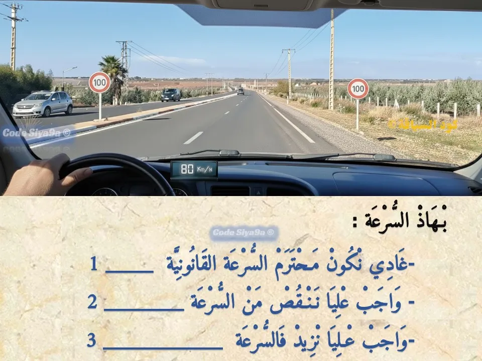
بيّن الجواب
الجواب الصحيح: 1
السرعة محدودة في 100 كلم في الساعه.
في هذا الحالة كنسير ب 80 كلم في الساعه يعني انني محترم السرعة القانونية. و يمكن ليا نمشي حتى ل 100 كلم في الساعه و يمكن ليا نمشي باقل .
- ما واجبش عليا نقص او نزيد في السرعة. و ما واجبش نزيد في السرعة.السؤال 39
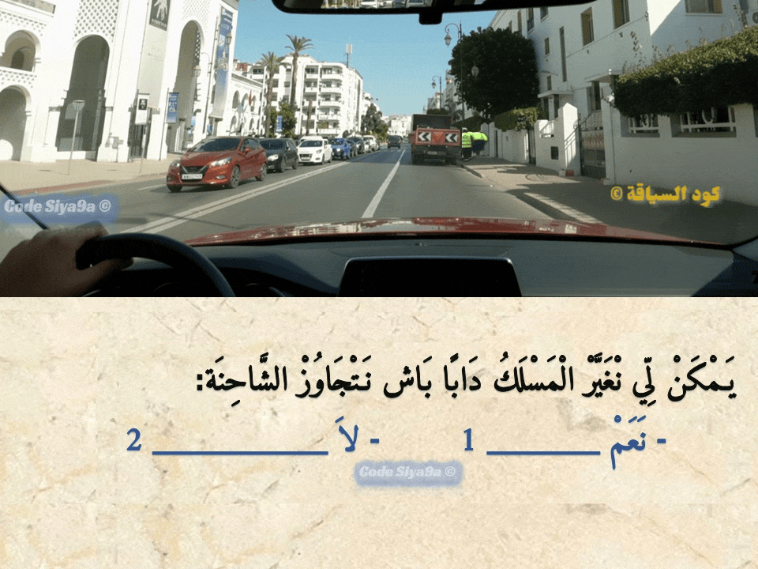
بيّن الجواب
الجواب الصحيح: 1
إذا كانت الشاحنة متوقفة بسبب أشغال على الطريق، فهذا يعني أنها لم تعد "مركبة تسير" بالمعنى التقليدي، بل أصبحت بمثابة عائق أو جزء من الأشغال.
في هذه الحالة، قواعد التجاوز المطبقة على الخط المتصل تُطبّق أساساً على التجاوز أثناء السير العادي. لكن عند وجود عائق ثابت أو شبه ثابت مثل مركبة متوقفة بسبب عطل أو أشغال، قد يُسمح بتجاوز الخط المتصل بشرط التأكد التام من السلامة وعدم تعريض مستعملي الطريق الآخرين للخطر، وفي حال وجود مساحة كافية للقيام بذلك بأمان.السؤال 40
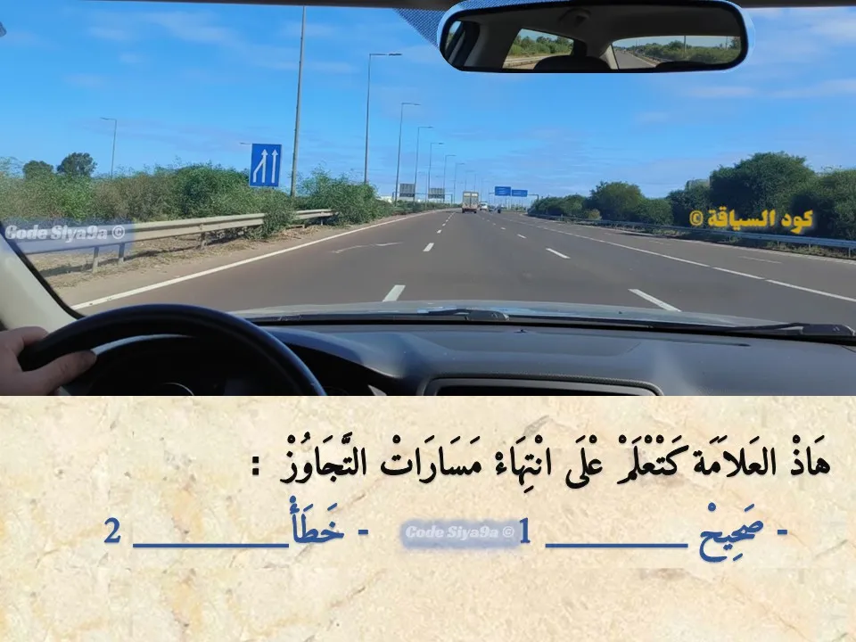
بيّن الجواب
الجواب الصحيح: 2
هذا العلامة كتعلم على نقصان في عدد المسالك .
- كانوا 3 ديال المسارات و ابتدأ من العلامة غادي يصبحوا فقط 2 .
- يمكن لي نستعمل المسار الثاني التجاوز .
يعني الجواب الصحيح هو رقم 2